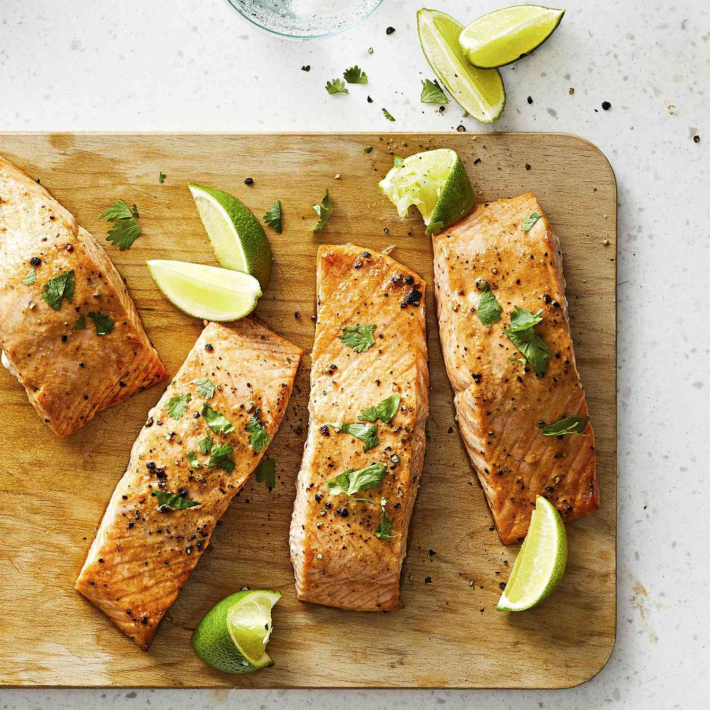

Grilled Salmon

Description
The fresh lime juice and mustard add a nice tang to this moist and flaky grilled salmon. I came up with this marinade after tasting something similar at a friend's house and it is now one of our favorite ways to do fish. You may also use other firm fish steaks instead of salmon; halibut, tuna and swordfish all work well.
Ingredients:
- ¼ cup fresh lime juice
- 1 tablespoon olive oil
- 2 teaspoons Dijon mustard
- ¼ teaspoon ground ginger
- ¼ teaspoon garlic powder
- ¼ teaspoon cayenne pepper
- ⅛ teaspoon black pepper
- 4 salmon steaks
Steps:
- Whisk together the lime juice, olive oil, mustard, ginger, garlic, cayenne pepper, and black pepper in a bowl, and pour into a resealable plastic bag. Add the salmon steaks, coat with the marinade, squeeze out excess air, and seal the bag. Marinate in the refrigerator for 1 hour.
- Preheat an outdoor grill for medium heat, and lightly oil grate. Remove the salmon from marinade, and shake off excess. Discard remaining marinade.
- Grill until the fish flakes easily with a fork, 5 to 10 minutes per side depending on thickness.